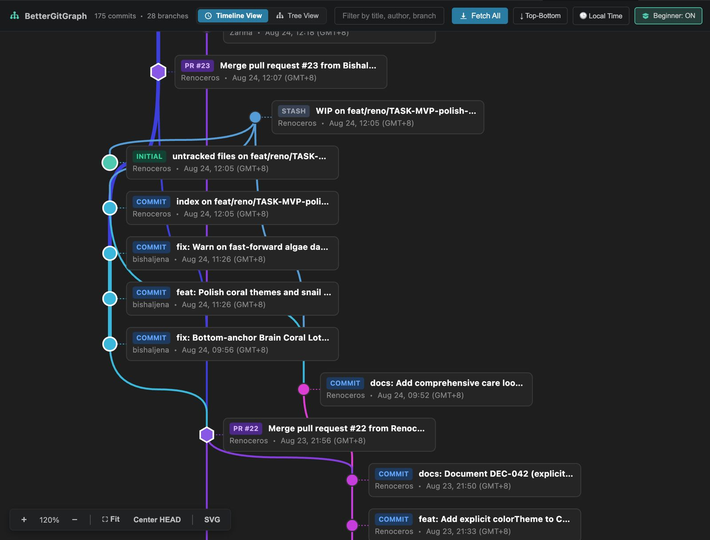

The Git Visualizer
VS Code Deserves.
A fast, modern, node-based Git visualization and commit studio for VS Code. Experience fluid Bézier branch curves, deterministic colors, one-click staging, and two-stage safety guardrails.

Engineered for Clarity, Speed & Safety
Say goodbye to flickering branch colors and rigid tabular logs. BetterGitGraph reimagines Git visualization for developer productivity.
Central Trunk & Bézier Topology
The main branch forms a prominent central spinal trunk, while feature branches branch out as vines and seamlessly merge back without chaotic line crossings.
Deterministic 32-bit Branch Colors
Branch hues are calculated via FNV-1a hashing. The same branch name will always produce the exact same color on every session and computer.
WIP Node & Commit Studio
Uncommitted modifications appear as a glowing dashed WIP node above HEAD. Click it to slide out the staging drawer with Conventional Commit chips, diff viewer, and commit/amend tools.
2-Stage Destructive Guardrails
High-risk actions (Hard Reset, Force Push, Force Delete Branch) require a 2-stage verification flow with plain-English impact warnings so you never lose work by accident.
Remote Divergence Radar
Real-time ↑N ↓M divergence pills rendered on branch plaques let you know at a glance how many commits you are ahead or behind your remote.
First-Class PR & Issue Geometry
Pull requests render as purple rounded hexagons (⬡) and issues as green shields (⛉), providing immediate geometric differentiation on the DAG.
Export High-Res SVG & PNG Maps
Right-click the canvas background to instantly generate and download vector .svg or high-res .png maps of your repository for design reviews and documentation.
100% Local-First & Zero Telemetry
Runs entirely inside your local VS Code process with strict Content Security Policies. Zero external API pings, zero tracking, zero code uploaded anywhere.
🛠️ Complete Installation & Setup Guide
Everything you need to get started with BetterGitGraph across Windows, macOS, and Linux.
-
1
Open Visual Studio Code
Ensure you are running VS Code version 1.90.0 or newer.
-
2
Open Quick Open / Extensions View
Press Cmd+P (macOS) or Ctrl+P (Windows/Linux), paste the installation command, and press Enter:
ext install Renoceros.bettergitgraph -
3
Launch BetterGitGraph
Open any folder containing a Git repository and press Cmd+Ctrl+G (macOS) or Ctrl+Alt+G (Windows/Linux), or click the BetterGitGraph icon in the top right editor toolbar.
-
1
Install Git CLI
BetterGitGraph uses your system's native Git binary for maximum speed and compatibility. Install Git if not already available:
# macOS (Homebrew)
brew install git# Windows (Winget)
winget install --id Git.Git -e --source winget# Linux (Debian / Ubuntu)
sudo apt update && sudo apt install git -
2
Configure Git Identity
Ensure your Git username and email are configured so commits from the Commit Studio are properly attributed:
git config --global user.name "Your Name"
git config --global user.email "you@example.com" -
3
GitHub CLI / Remote Authentication (Optional)
To enable seamless 1-click Pull Request creation and remote syncing, authenticate your remote credentials:
gh auth login
-
1
Download the latest VSIX package
Download
bettergitgraph-1.3.2.vsixfrom the GitHub Releases Page. -
2
Install via Terminal
Run the VS Code CLI install command:
code --install-extension bettergitgraph-1.3.2.vsix -
3
Or Install via VS Code GUI
Open VS Code $\rightarrow$ go to Extensions view (Ctrl+Shift+X) $\rightarrow$ click the
...menu in the top right $\rightarrow$ choose Install from VSIX....
⌨️ Controls & Keybindings Cheat Sheet
Fluid navigation and quick actions designed for developer ergonomics.
| Action | macOS Shortcut | Win / Linux Shortcut | Behavior |
|---|---|---|---|
| Open BetterGitGraph | Cmd + Ctrl + G | Ctrl + Alt + G | Opens or brings the interactive graph tab to focus |
| Pan Canvas | Click + Drag | Click + Drag | Smoothly pan across repository history |
| Zoom In / Out | Scroll Wheel / Pinch | Scroll Wheel / Pinch | Cursor-centered zoom from overview to node cards |
| Center Active HEAD | Double Click (Canvas) | Double Click (Canvas) | Instantly centers the camera on the active HEAD commit |
| Fit to Screen | Click ⛶ Fit | Click ⛶ Fit | Auto-scales graph to fit all rendered commits in window |
| Inspect Commit Card | Left Click (Node) | Left Click (Node) | Opens floating details card with files, parents & diff links |
| Open Staging Studio | Left Click (WIP Node) | Left Click (WIP Node) | Slides out commit composer with file checkboxes & Conventional chips |
| Git Operations Menu | Right Click (Node) | Right Click (Node) | Context menu for Checkout, Branch, Tag, Revert, Reset, PR |
| Canvas Export Menu | Right Click (Background) | Right Click (Background) | Export full repository map as standalone SVG or high-res PNG |
❓ Frequently Asked Questions & Troubleshooting
Find answers to common questions about requirements, remote configuration, and features.
You only need two things:
- Visual Studio Code version
1.90.0or newer (or compatible forks like VSCodium, Cursor). - Git CLI (version
2.20.0or newer) installed and accessible in your systemPATH.
BetterGitGraph uses your local Git binary directly so it respects all your existing SSH keys, GPG signing keys, Git aliases, and repository configurations.
gh) to create Pull Requests?
▼
No! BetterGitGraph automatically detects your repository's remote provider (GitHub, GitLab, Bitbucket, or Azure DevOps) and generates direct web comparison URLs. Clicking "Raise PR / Create MR" opens your default browser directly to the pull request creation page with base and head branches pre-selected.
Whenever you have modified or untracked files in your working directory, BetterGitGraph renders an emerald dashed WIP (Work In Progress) node attached to your current HEAD commit. Clicking this node slides out the Commit Drawer, allowing you to:
- Check/uncheck files to stage (
git add) or unstage (git restore --staged). - Click any file name to view inline VS Code diffs.
- Click Conventional Commit chips (
feat:,fix:,refactor:, etc.) for standardized commit messages. - Commit changes (Ctrl+Enter / Cmd+Enter), Commit & Push, or Amend your previous commit.
To prevent accidental data loss, destructive Git commands like Hard Reset (git reset --hard), Force Push (git push --force-with-lease), Force Delete Branch (git branch -D), and Discard File Changes enforce a 2-stage confirmation modal:
- Step 1: Displays a plain-English explanation of the impact and preview of the exact Git command.
- Step 2: Requires an explicit second confirmation on an alert warning stating the action cannot be undone.
You can toggle this in VS Code Settings: bettergitgraph.twoStageConfirmation (default: true).
By default, the central trunk (main/master) is styled with a prominent stroke thickness (7px) to visually anchor your repository tree, while feature branches default to 3px. You can customize both in VS Code Settings:
bettergitgraph.mainTrunkStrokeWidth(default:7, range:2 - 16)bettergitgraph.branchStrokeWidth(default:3, range:1 - 10)
Right-click anywhere on the empty canvas background to bring up the Canvas Menu, then select Export as SVG or Export as PNG. SVG exports are self-contained vector XML files with embedded fonts and clip paths suitable for presentations, README files, or Figma boards.
Absolutely not. BetterGitGraph is 100% local-first. It operates under a strict Content Security Policy (default-src 'none') and makes zero network requests. Your source code and commit history never leave your computer.
Make sure the folder opened in VS Code contains a .git directory. If working in a subfolder or monorepo, open the root repository directory in VS Code, or initialize a new repository via terminal (git init).